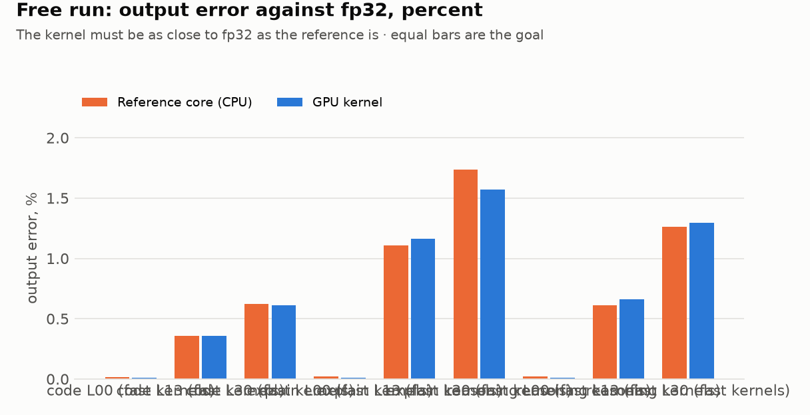

GPU kernel against the reference core
The same recorded traces go through the GPU kernel and through the C++ reference. Three things are compared; kernel/verify_kernel.py explains why.

| Trace | Result | In a window: median | 99% below | worst | Folds | Bit-identical folds | int8 entries that differ | Free run: kernel | reference | Drift between the two free runs |
|---|---|---|---|---|---|---|---|---|---|---|
| code_trace_layer_00 (fast kernels) | PASS | 8.6e-08 | 4.9e-07 | 1.5e-04 | 255 | 0 | 73,740,007 of 133,693,440 | 0.0099% | 0.0168% | 2.0e-02 |
| code_trace_layer_13 (fast kernels) | PASS | 1.7e-07 | 5.5e-06 | 2.5e-04 | 255 | 0 | 94,405,349 of 133,693,440 | 0.3558% | 0.3572% | 7.8e-02 |
| code_trace_layer_30 (fast kernels) | PASS | 1.5e-07 | 9.3e-06 | 3.4e-04 | 255 | 0 | 84,065,710 of 133,693,440 | 0.6136% | 0.6236% | 5.1e-02 |
| explain_trace_layer_00 (fast kernels) | PASS | 8.5e-08 | 8.4e-07 | 7.4e-05 | 255 | 0 | 75,944,184 of 133,693,440 | 0.0121% | 0.0229% | 1.0e-02 |
| explain_trace_layer_13 (fast kernels) | PASS | 1.8e-07 | 3.8e-06 | 1.3e-04 | 255 | 0 | 73,885,119 of 133,693,440 | 1.1641% | 1.1078% | 1.4e-01 |
| explain_trace_layer_30 (fast kernels) | PASS | 1.5e-07 | 8.7e-06 | 1.9e-04 | 255 | 0 | 69,719,335 of 133,693,440 | 1.5683% | 1.7375% | 2.1e-01 |
| reasoning_trace_layer_00 (fast kernels) | PASS | 8.4e-08 | 7.4e-07 | 2.5e-04 | 255 | 0 | 80,088,162 of 133,693,440 | 0.0127% | 0.0224% | 1.1e-02 |
| reasoning_trace_layer_13 (fast kernels) | PASS | 1.8e-07 | 5.9e-06 | 4.4e-04 | 255 | 0 | 81,116,279 of 133,693,440 | 0.6589% | 0.6120% | 2.9e-01 |
| reasoning_trace_layer_30 (fast kernels) | PASS | 1.5e-07 | 9.8e-06 | 2.4e-04 | 255 | 0 | 71,033,962 of 133,693,440 | 1.2943% | 1.2616% | 1.7e-01 |
What it shows
- 9 of 9 traces pass.
- The drift column is why a plain output comparison cannot be the test: two correct runs end this far apart.
Source: d_verify_*.txt.
Generated 2026-11-14 03:09 from results/round10, results/fast_fold_v6, results/fast_decode_v5 by reports/generate_reports.py. All reports.